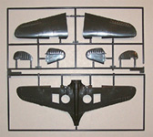

{kind=link}
{kind=link}
{kind=link}

You may click on the small images above to view larger pictures.
Hasegawa P-40K �CBI Campaign�
Kit #9659
MSRP $
Images and text Copyright � 2006 by Matt Swan
Developmental Background
I�ve written several reviews on different variations of the Curtiss P-40 which have already covered the general background of the type. With that in mind let�s talk about what makes the K different from all the other P-40s. The K series aircraft were built in the Curtiss plant at Buffalo New York during the last half of 1942. Approximately 1300 aircraft were manufactured before the type changed. One of the things that distinguished the K was the reintroduction of the Allison engine. Previous models had used the license built Merlin engine but this version placed the more powerful Allison V-1710-73 under the bonnet. The P-60 was under development at the time and was expected to be replacing the P-40 so at the time this was thought to be the last version of the type that would be manufactured. Due to delays in the P-60 program orders for the P-40K were increased and the type was slated for the Lend-Lease program with China.
In essence the K was the earlier E with the new engine, she retained the same short fuselage which, when combined with the increased power, cause it to swing excessively during the takeoff run. To correct this a dorsal fin was added giving the type a distinctive profile. Later production models of the K had the fuselage stretched slightly to help negate the torque problems. While most of this type did indeed go to China some were diverted to England as the Kittyhawk III and a few ended up in the Middle East as well. Twenty-five units were also shipped to Brazil. The P-40 was penalized and much maligned during its lifetime because of the mediocre high altitude performance of the Allison engine. With pilots properly trained in how to utilize its strengths the P-40 was a weapon not to be trifled with as many Japanese and German pilots were to discover. The combat record of the P-40 in China is fairly common knowledge however the type tangled successfully with the infamous Messerschmitt 109 in Africa and accounted well for itself.
The Kit
Once you lift the box top with its well done and colorful artwork you are greeted with a large collection of parts sprues, nine in all, and the modular design of the kit becomes readily apparent. For the most part the P-40 used the same wing layout and fuselage throughout its design career. Areas that showed the most difference were right behind the cockpit, the tail section of the fuselage and the gun arrangements in the fuselage. These are all cast as plug-ins with the apparent intent to produce an entire series of P-40 kits. Even the shell ejector plates under the wings are separate to deal with the two or three gun placements. Parts in general all look very nice, cast in a medium gray high pressure injection molded plastic with no visible flash, no evident sink marks or serious injector pin markings. All panel line detail is recessed and crisp. General parts fit looks to be pretty good. With the fuselage being split into four sections my first concern was would there be a good fit of these pieces. Dry fitting them shows that they line up very nicely with no steps and all panel lines being consistent. I think I would glue the forward and aft sections together first to help avoid any issues that are not apparent yet.
Looking inside the front office it looks like we have proper depth which is something that was lacking in the Trumpeter offering of the B version. The pilot�s seat looks good with separate support structure but has no seatbelt detail not are seatbelts included in the decal sheet. The dash has good raised instrument detail and there are optional decals should you want to sand it smooth and go that way verses painting the details. Lower cowl flaps are separate pieces meant to be modeled in the open position and include finely molded actuators � something I cannot remember seeing on any other P-40 kit in this scale to date. Taking a look at the underside we have well detailed landing bay inserts and complete actuators for the landing struts, the side actuator and the aft actuator, another detail I don�t recall seeing on a P-40 kit before. We have a choice of an extended range drop tank or a single 500 pound bomb for the fuselage hard point. Exhaust manifold come in pairs and while not bored out look like they will do a good job of representing the real thing. The large sprue of clear parts contains quite a few pieces, more than would seem possible for this type of aircraft but upon closer inspection we have not only a four piece canopy that can be modeled open or closed but a collection of landing lenses and formation lights that should add greatly to the overall effect on the completed subject.
Taking inventory of the kit we have one hundred nine parts in gray plastic along with eighteen clear parts for a total of one hundred twenty seven pieces in the box.

You may click on the small images above to view larger pictures.
Decals and Instructions
Kit instructions come as a fairly standard four-panel fold out printed on both sides. They begin with the customary historical background of the aircraft which is pretty brief and covers the most noticeable features of the F model. The next panel contains a complete parts map and a very comprehensive paint chart listing colors by Aqueous Hobby Color numbers, Gunze Mr. Color numbers and by generic color name. Following this are twelve exploded view construction steps that contain plenty of color call-outs. There is a small subset of instructions for removal of the molded marker lights and replacing them with the clear options. The final two panels are devoted to decal placement and exterior painting for two aircraft.
The decal sheet is very comprehensive with markings for a standard camouflaged unit operating out of China in late 1943 and an all Olive Drab unit from India 1944. The OD unit is for the aircraft called Jinx with the really nice Assam Dragon teeth associated with the 25th Fighter Squadron. Decals include plenty of service stencils, warning markings and propeller markings. The decals show excellent print registry, very good color density and do not appear to be overly thick. Previous experience with Hasegawa decals indicates they should behave well with all your standard setting solutions.
Conclusions
You just can�t have too many P-40s, have I said that before? This looks to be a very accurate rendition of the P-40K and the modular design tells us there will be more P-40 variants coming along soon. Parts fit together well, some care must be taken when fitting the modular panels but all panel lines seem to match up well. Since this is a very new kit to the market there is nothing out as yet on the aftermarket but I am sure we will be seeing those goodies before long. Even should you need something immediately there are plenty of detail items intended for other P-40 kits that could be easily adapted to this one. I recommend this as a good purchase for your collection and to fill out the complete P-40 line. After all, isn�t everyone building a representation of every model of the P-40?